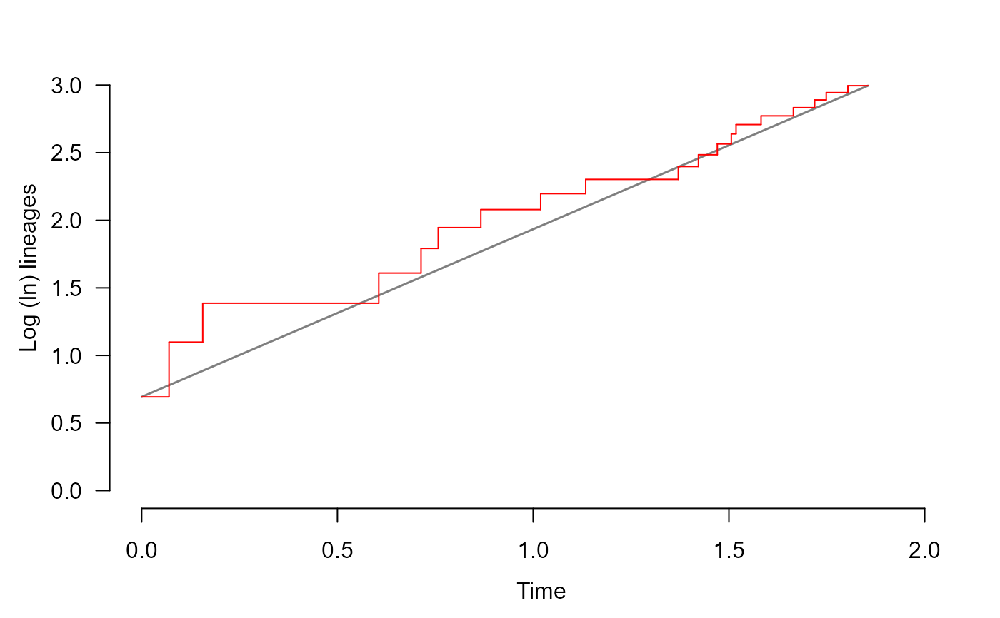

lttPlot plots the lineage through time (LTT) of a phylo object.
It also adds a reference line connecting the edges of the graph.
lttPlot(
phy,
lwd = 1,
col = "red",
plot = TRUE,
rel.time = FALSE,
add = FALSE,
knitr = FALSE
)A phylo object, as specified by the ape package.
Line width.
Line color.
A logical indicating with calculations should be plotted.
If FALSE, function returns a list of the calculated points.
A logical indicating how the time scale should be
shown. If FALSE (default), plots the absolute time since phy's
crown age. If TRUE, plots time as a relative proportion between
crown age and furthest tip from root.
A logical indicating if plot should be added to
pre-existing plot. Default is FALSE.
Logical indicating if plot is intended to show up in RMarkdown files made by the Knitr R package.
Plots the sum of alive lineages per point in time, and adds a red
line as a reference of expectation under pure birth. If plot = FALSE,
a list the richness of each point in time, and phy's crown age.
Paradis, E. (2012). Analysis of Phylogenetics and Evolution with R (Vol. 2). New York: Springer.
S <- 1
E <- 0
set.seed(1)
phy <- simulateTree(pars = c(S, E), max.taxa = 20, max.t = 5)
lttPlot(phy, knitr = TRUE)

lttPlot(phy, plot = FALSE, knitr = TRUE)
#> $ldata
#> stime lineages
#> [1,] 0.00000000 0.6931472
#> [2,] 0.06989763 1.0986123
#> [3,] 0.15597366 1.3862944
#> [4,] 0.60566076 1.6094379
#> [5,] 0.71359732 1.7917595
#> [6,] 0.75750071 1.9459101
#> [7,] 0.86636212 2.0794415
#> [8,] 1.01919949 2.1972246
#> [9,] 1.13422660 2.3025851
#> [10,] 1.37067812 2.3978953
#> [11,] 1.42212044 2.4849066
#> [12,] 1.47034648 2.5649494
#> [13,] 1.50608706 2.6390573
#> [14,] 1.51820710 2.7080502
#> [15,] 1.58208936 2.7725887
#> [16,] 1.66461861 2.8332133
#> [17,] 1.71894482 2.8903718
#> [18,] 1.74853490 2.9444390
#> [19,] 1.80376852 2.9957323
#>
#> $age
#> [1] 1.855181
#>